Project LANTERN turns SEC 10-K filings into a corpus where every sentence and every number can be traced back to a page and a bounding box in the source, and every financial figure is checked against the filing's own XBRL.
FinTrust Analytics' analysts download filings by hand and cannot say where a number in a memo came from. LANTERN automates the whole path: it downloads two Apple (AAPL) 10-K filings (FY2024 and FY2025) from SEC EDGAR, renders them to PDF, extracts text, tables and layout with three independent methods, validates the numbers against XBRL, evaluates quality against a hand-typed answer key, and versions every artifact with DVC, so the corpus rebuilds from one command.
Result | Step | |
Corpus | 2 filings, 121 pages, 1,705 validated records, each with a page and a bounding box | Parts 0, 5 |
Text accuracy | 1.67% word error rate (pdfplumber) on 16 hand-typed pages | Part 9 |
Table accuracy | cell F1 of 1.0 on 111 cells keyed by two people independently (agreement 0.991) | Part 9 |
Validated against XBRL | 456 of 456 statement numbers match the filing's own XBRL (100%) | Part 11 |
Build vs buy | open source about $6 a year in compute vs about $4,540 a year for AWS Textract, at 5,000 filings | Parts 7, 10 |
Reproducible | a fresh clone rebuilds everything with | Part 8 |
Component | How it works |
Ingest (Part 0) | Downloads the two 10-Ks pinned in |
Text (Part 1) | Reads every page's text and word boxes with pdfplumber. A three-signal trigger sends image-only pages to Tesseract OCR: none of the 121 filing pages needed it, and the scanned test fixture came back at 95.4–95.7 confidence. |
Tables (Part 2) | A hybrid extractor picks the best Camelot method per page (stream for the income statement, network for the balance sheet) and normalizes every number: negatives in parentheses, the "in millions" scale, unscaled per-share rows. |
Layout (Part 3) | LayoutParser finds the blocks on each page and routes each one to the right extractor; a fallback keeps every word the model misses. |
Docling (Part 4) | A second, independent parsing path, used to compare and as a fallback for layouts the traditional path handles badly. |
Corpus (Parts 5–6) | 1,705 records, each validated by a pydantic schema and carrying its page and bounding box. JSONL is the source of truth; section Markdown, with a provenance comment before every block, feeds retrieval. |
Build vs buy (Part 7) | AWS Textract runs as an optional, cached fallback, off by default, so the pipeline needs no cloud credentials. |
Pipeline (Part 8) | Nine DVC stages with every output hash in |
Evaluation (Part 9) | Scores every path against 18 hand-typed pages and two double-keyed statements, with regression tests that fail when a parser breaks. |
Benchmarks (Part 10) | Times every stage per page and turns that into a yearly cost, open source vs managed. |
XBRL validation (Part 11) | Loads the filings' own XBRL with Arelle, maps each table row to its concept, and checks every number. |
Big Data and Intelligent Analytics (DAMG 7245), Fall 2026 · Team 1
Team member | Parts |
Pradyumna Reddy Cherla | Part 2 (tables), Part 3 (layout), Part 9 (evaluation), Part 11 (XBRL validation) |
Pranav Avinash Waghmare | Part 0 (download and render), Part 4 (Docling), Part 8 (pipeline), Part 10 (benchmarks) |
Preksha Praveen | Part 1 (text and OCR), Part 5 (schema and provenance), Part 6 (formats), Part 7 (build vs buy), DVC remote on S3 |
Every stage reads one folder and writes the next, and every folder is versioned with DVC.
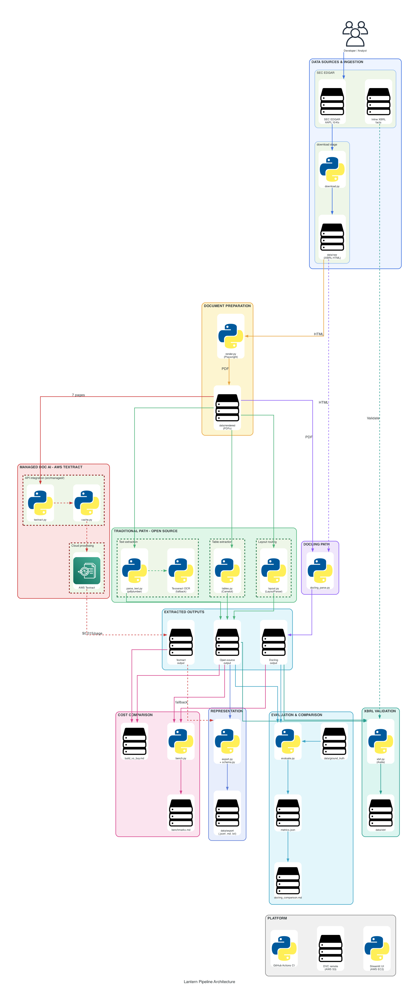
Layer | Stages | What it produces |
Ingest |
| the filings' iXBRL HTML ( |
Parse |
| text and word boxes, tables, layout blocks, and Docling's alternative reading |
Managed fallback | (optional, off by default) | cached AWS Textract responses ( |
Represent |
| validated JSONL, section Markdown and TXT ( |
Validate and evaluate |
| XBRL match rates ( |
This rebuilds the whole corpus from our DVC remote. No AWS or other cloud credentials are needed: the data is publicly readable, and the managed service (Part 7) is off by default.
render stage)macOS:
brew install tesseract poppler
Ubuntu / WSL:
sudo apt-get install -y tesseract-ocr poppler-utils
These are the exact commands from the brief's reproducibility contract:
git clone https://github.com/BigDataIA-Fall-26-Team-1/lantern.git lantern && cd lantern
git checkout submission
python -m venv .venv && source .venv/bin/activate
pip install -r requirements.txt
dvc pull
dvc repro
dvc metrics show
pytest -q
dvc pull downloads every data folder from the read-only S3 remote: data/raw, data/rendered, data/parsed, data/tables, data/layout, data/figures, data/docling, data/export, data/managed, data/ground_truth, data/xbrl and data/bench.dvc repro reports every stage as unchanged and skips it, because every output already matches dvc.lock. That is what reproducibility looks like.dvc metrics show prints the evaluation metrics from reports/metrics.json (Part 9).pytest -q passes every test.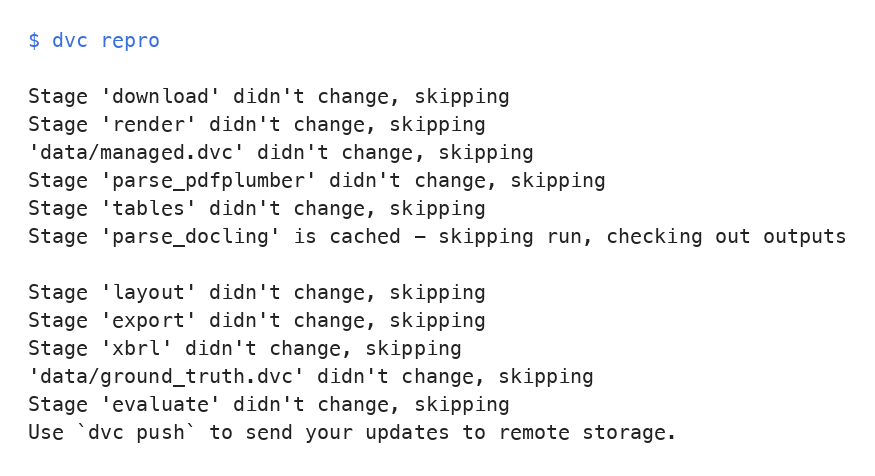
Two stages turn EDGAR filings into the PDFs every later stage reads.
src/download.py uses sec-edgar-downloader with download_details=True. Which filings to fetch is pinned in params.yaml, so the corpus never depends on "the latest" filings:
download:
ticker: AAPL
forms: ["10-K"]
after: "2024-01-01"
before: "2026-01-01"
Every request declares the team's User-Agent (name and Northeastern email, also from params.yaml). Each filing's full-submission.txt is unpacked into an unpacked/ folder with the original file names: the iXBRL .htm, the .xsd and the linkbases, which Part 11 needs to load the filing in Arelle.
EDGAR's official documents are Inline XBRL HTML, not PDFs, so src/render.py renders each filing's HTML with Playwright (headless Chromium, Letter size) to data/rendered/{TICKER}_{FORM}_{PERIOD}.pdf. PERIOD comes from the CONFORMED PERIOD OF REPORT header line, and the CIK from CENTRAL INDEX KEY. The stage also writes data/rendered/manifest.csv (stem, accession, cik, ticker, form, period, source file), which lets every later stage translate a file name into an accession number.
dvc repro download render
After a dvc pull, both stages are skipped. To inspect the results:
du -sh data/raw
cat data/rendered/manifest.csv
pdfinfo data/rendered/AAPL_10K_20250927.pdf | grep Pages
Filing | Accession | Rendered PDF | Pages |
FY2024 10-K | 0000320193-24-000123 |
| 60 |
FY2025 10-K | 0000320193-25-000079 |
| 61 |
data/raw is 37.3 MB (181 files), under the brief's 100 MB limit.
Three small PDFs are committed to Git in tests/fixtures/ (not DVC), because CI has no access to the DVC remote:
Fixture | What it is | Used to test |
| FY2025 PDF page 32, the income statement | table extraction |
| FY2025 pages 5–7 rasterized at 300 DPI ( | the OCR path |
| JPMorgan Chase 10-K (accession 0000019617-25-000270), PDF page 10: Apple's filings have no multi-column page | reading order |
Their sources are documented in tests/fixtures/README.md.
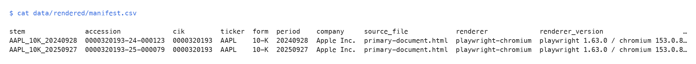
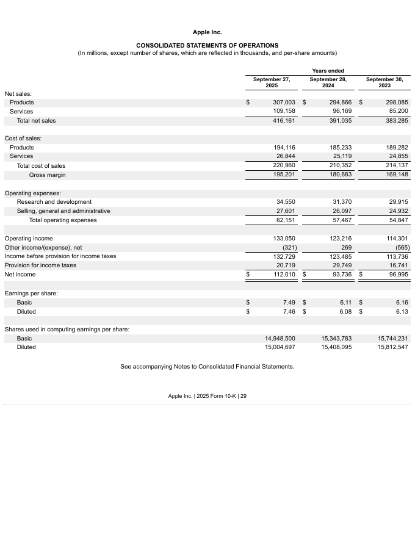
The parse_pdfplumber stage reads every rendered PDF page by page. For each page it saves the text, saves every word with its bounding box, and decides whether the page needs OCR.
Output | Contents |
| Text of one page |
| One word per line with |
| One row per page: document, page, triggered, reason, engine, mean confidence, and the three signal values |
The trigger checks three signals on every page: the character count, the share of junk tokens such as (cid:NN), and how much of the page is covered by images. The reason column in the log records which signals fired. All thresholds, the OCR resolution and the Tesseract settings live in params.yaml:
ocr:
min_chars: 50
junk_ratio: 0.3
dpi: 300
image_coverage: 0.6
tesseract_config: "--oem 1 --psm 6"
Tesseract returns boxes in pixels. The stage converts them back to points (pt = px * 72 / dpi) so OCR words and pdfplumber words use the same coordinates.
On the full corpus:
dvc repro parse_pdfplumber
On the committed fixtures only (the same command CI runs):
python src/parse_text.py --input tests/fixtures --output /tmp/parsed_fixtures
Every page has a .txt file:
pdfinfo data/rendered/AAPL_10K_20250927.pdf | grep Pages
ls data/parsed/AAPL_10K_20250927_p*.txt | wc -l
Filing | PDF pages |
| Pages sent to OCR |
AAPL_10K_20250927 | 61 | 61 | 0 |
AAPL_10K_20240928 | 60 | 60 | 0 |
A word record from words.jsonl:
{"doc_id": "0000320193-25-000079", "stem": "AAPL_10K_20250927", "page": 1, "text": "UNITED", "bbox": [255.33, 67.76, 303.71, 80.75], "units": "pt", "origin": "top-left", "source": "pdfplumber", "ocr": false, "conf": null}
The OCR log for the fixtures (the sed fills empty cells so column keeps them aligned):
sed 's/,,/,-,/g' /tmp/parsed_fixtures/ocr_log.csv | column -s, -t
Fixture | Page | Triggered | Reason | Engine | Mean conf | Text chars |
scanned | 1 | True | low_chars; image_coverage | tesseract | 95.4 | 3,808 |
scanned | 2 | True | low_chars; image_coverage | tesseract | 95.7 | 6,108 |
scanned | 3 | True | low_chars; image_coverage | tesseract | 95.5 | 4,565 |
statement | 1 | False | none | pdfplumber | n/a | 1,194 |
multicol | 1 | False | none | pdfplumber | n/a | 3,846 |
The scanned fixture has no text layer (0 characters, full-page image), so every page goes to Tesseract and comes back with non-empty text. The born-digital fixtures and all 121 pages of the two filings stay on pdfplumber.
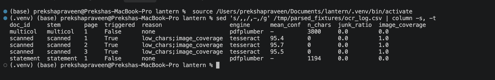
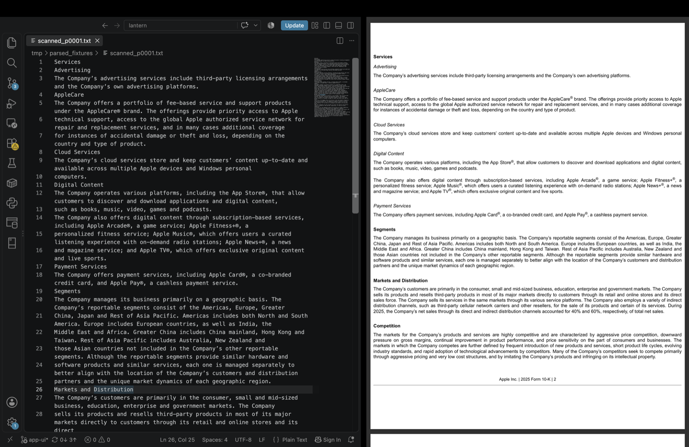
The tables stage finds the financial statements in each filing, extracts them with the best method for each page, and normalizes every number.
A page counts as a statement page when a statement title is (nearly) a whole line near the top of the page and the page has enough numbers. Two problems on the real filings were fixed: the Item 15 exhibit index was a false positive (fixed by limiting extra characters on the title line), and the short comprehensive income statement was missed (fixed by lowering the minimum number count to 20). The result is exactly pages 32 to 36 in both filings, with no false positives.
Five methods on two statement pages, with 10 cells per method checked by hand against the page image:
Method | Income statement (p32) | Balance sheet (p34) |
Camelot lattice | 0/10 | 0/10 |
Camelot stream | 10/10 | 5/10 (stopped at "Total assets") |
Camelot network | 0/10 (dropped every row label) | 10/10 |
Camelot hybrid | 0/10 | 0/10 |
pdfplumber text | 9/10 (dropped a closing parenthesis) | 10/10 (but split labels mid-word) |
Two findings drive the design:
src/tables.py decides per page, with every threshold in params.yaml under tables:
$-only columns, and join labels that wrap onto a second line.accuracy − whitespace_weight × whitespace) and accept the first one at or above accept_score (80); otherwise keep the best valid table as best_below_threshold.Every decision is logged in tables_log.csv. On the balance sheet, stream is tried first and rejected (coverage 40%), then network is accepted (score 87.95).
Page | Statement | Method chosen | Shape | Score |
32 | Income | stream | 27×4 | 90.38 |
33 | Comprehensive income | stream | 16×4 | 87.21 |
34 | Balance sheet | network | 39×3 | 87.95 |
35 | Shareholders' equity | stream | 23×4 | 91.36 |
36 | Cash flows | stream | 38×4 | 91.88 |
Raw and normalized grids are stored side by side (.raw.csv and .norm.csv in data/tables/):
(1,234) becomes −1,234; dashes become 0; $, commas and trailing footnote markers are stripped.header, money, shares or per_share.Checked on the income statement: net income 112,010 becomes 112,010,000,000; (321) becomes −321,000,000; diluted EPS stays 7.46. On the balance sheet, total liabilities 285,508 plus total shareholders' equity 73,733 equals total assets 359,241. 25 unit tests in tests/test_tables_normalize.py cover the rules.
dvc repro tables
python src/tables.py --input tests/fixtures --output /tmp/tables_fixture
The full bake-off, the 20 hand-checked cells and the reasoning are in reports/tables_method.md.
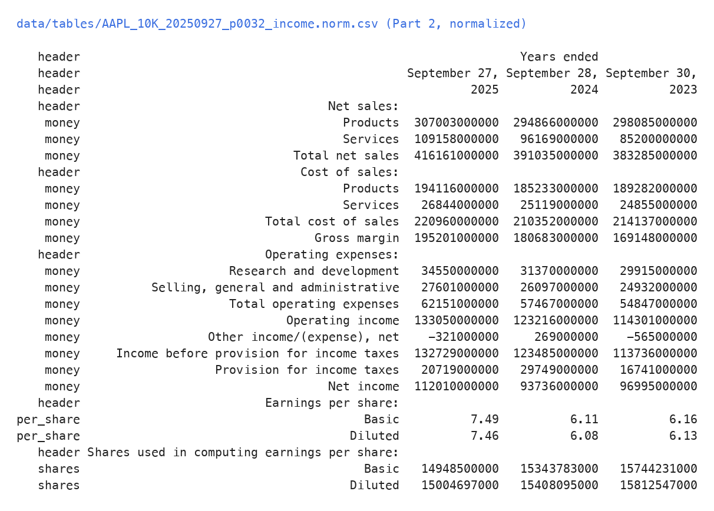
The layout stage finds the blocks on every page with a learned layout model, then sends each block to the right extractor.
LayoutParser EfficientDet (tf_efficientdet_d0, trained on PubLayNet), with pages rendered at 150 DPI and boxes converted to PDF points with a top-left origin. The score threshold is 0.25: at 0.5, almost nothing was kept, since most correct blocks scored 0.28 to 0.45.
Block type | Sent to |
Text, Title, List | pdfplumber within the block's box (OCR if empty) |
Table | Part 2's extractor, limited to the block's padded region |
Figure | cropped to |
Blocks are put in reading order (by column, then top to bottom), and each Text block is attached to the nearest preceding Title as its section. Output: data/layout/{stem}.blocks.jsonl.
Routing helps tables directly: on the balance sheet, Camelot stream on the full page stopped at "Total assets" (coverage 40%), but stream limited to the layout region returned the whole statement (37×3, coverage 90%).
Ten FY2025 pages covering every page type (cover, table of contents, prose, MD&A, statements, notes, auditor's report) were checked element by element:
Class | Elements | Correct | Partial | Missed | Wrong type | Detected |
Text | 60 | 26 | 5 | 28 | 1 | 52% |
Title | 38 | 26 | 0 | 11 | 1 | 68% |
List | 4 | 2 | 0 | 2 | 0 | 50% |
Table | 8 | 5 | 0 | 3 | 0 | 63% |
PubLayNet was trained on journal articles, not SEC filings, and it shows: it finds the statements reliably but misses about half the body text. The stage handles that rather than losing text:
fallback Text blocks, so no text is lost.FY2024 | FY2025 | |
Blocks (after cleanup) | 871 | 834 |
Tables detected by the model | 29 | 31 |
Tables extracted (accepted or best below threshold) | 23 | 24 |
dvc repro layout
QA overlays for the audited pages, in both filings, are in reports/layout/; the per-page audit is in reports/layout_audit.md.
Where it works: on the FY2025 income statement (page 32), one tight Table box covers the whole statement, so Camelot gets exactly the right region. Only the statement title above it is missed.
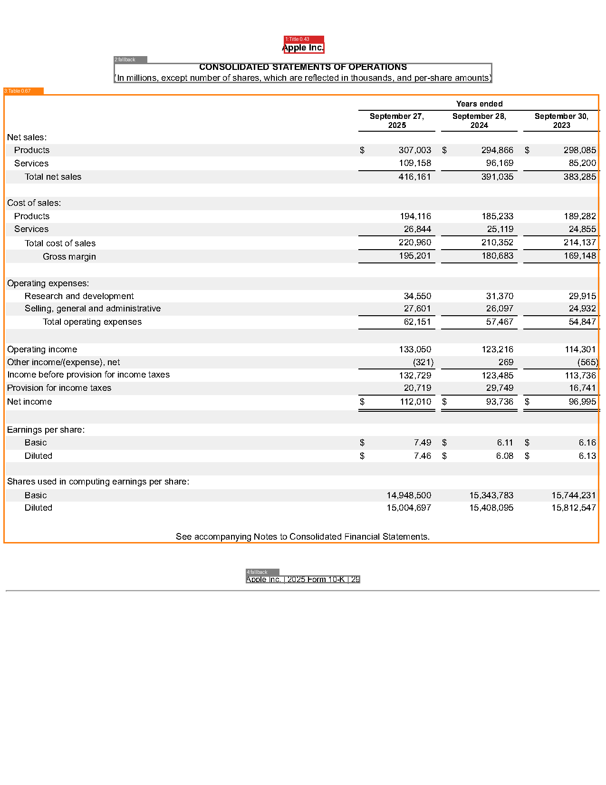
Where it fails: on the FY2025 cover page (page 1), the model draws a page-wide Table box (score 0.25) and a page-wide Figure box (score 0.38), and labels the Nasdaq column a List. This is PubLayNet's domain shift: it was trained on journal articles, not SEC cover pages. No text is lost, though: the cover's words still reach the corpus through the fallback blocks.
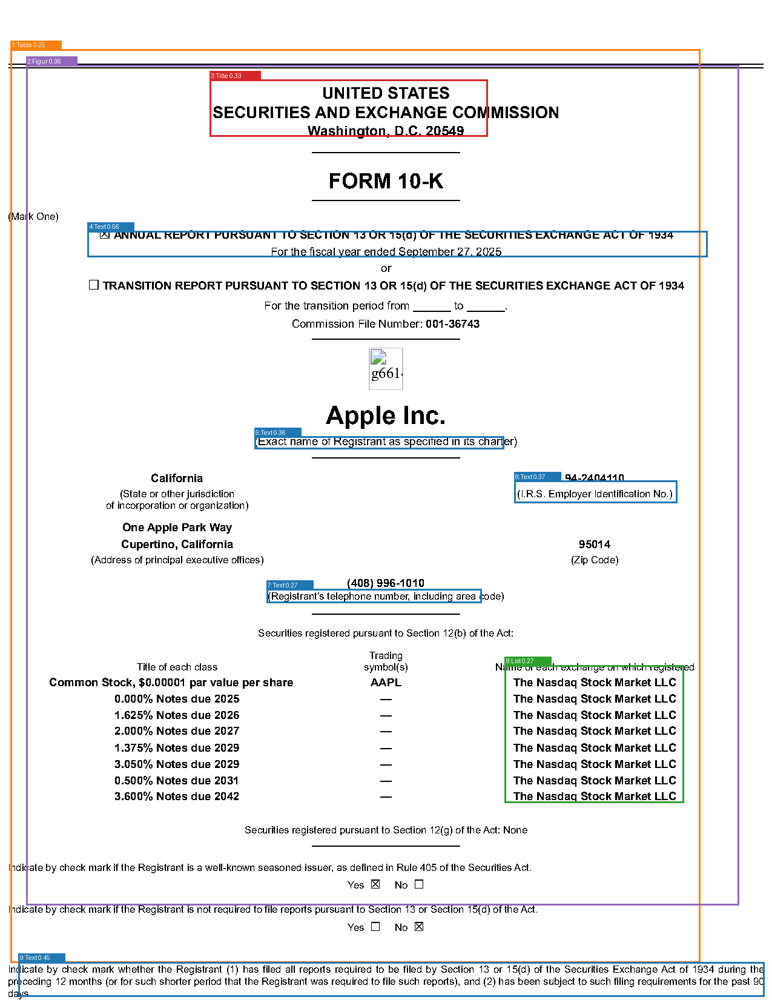
The parse_docling stage converts every rendered PDF with Docling, as an alternative path next to the traditional one (not a replacement).
src/docling_parse.py (run as python -m src.docling_parse, because the file name clashes with Docling's own docling_parse package) writes to data/docling/: Markdown, lossless JSON, every table as CSV, per-page Markdown (export_to_markdown(page_no=n), which Part 9 needs for WER), and {stem}.items.jsonl.
Docling writes bounding boxes with a bottom-left origin. Before any comparison, the stage converts them with bbox.to_top_left_origin(page_height) into items.jsonl (points, top-left), so they match our schema. The lossless JSON is left untouched.
Setup: Docling 2.134.0, do_ocr: false, TableFormer accurate (from params.yaml).
dvc repro parse_docling
Dimension | Metric | Traditional | Docling |
Text accuracy | WER, 16 ground-truth pages | 1.67% | 6.32% |
Numeric fidelity (text) | numeric-token recall | 99.48% | 87.43% |
Table structure | cell F1, 2 tables, 111 cells | 1.00 | 1.00 |
Numeric fidelity (statements) | XBRL match rate | 456/456 | 450/450 |
Reading order (cover pages) | WER | 3.74% pdfplumber, 59.87% layout-routed | 6.90% |
Footnotes | separate labels | none | footnote, caption |
Throughput | s/page, p50 / p95 | 0.70 / 3.49 | 4.52 / 19.22 |
Memory | peak RSS | 1,055 MiB | 3,597 MiB |
Every number either path extracted matches XBRL. The difference is coverage: in both filings, Docling merged the first cash-flow row ("Cash, cash equivalents ... beginning balances") into the column header, so 6 numbers never became data cells. The traditional path extracted that row.
The same filing (FY2024), converted from the original iXBRL HTML and from the rendered PDF:
Rendered PDF | iXBRL HTML | |
Tables found | 51 | 63 |
Conversion time | 380–966 s | 39–97 s |
Pages and bboxes | yes (60 pages) | none |
HTML finds more tables and is about 10× faster, but has no pages or boxes, so it cannot support the page-and-bbox citations the brief requires. Rendering changes table boundaries, not table content.
Keep the traditional pipeline as the primary path: lowest WER (1.7% vs 6.3%), highest numeric recall (99.5% vs 87.4%), all 456 statement numbers matched to XBRL including the cash-flow row Docling dropped, and about 6× less compute. Use Docling as the fallback where the traditional path is weak: side-by-side layouts (cover-page WER 6.9% vs 59.9% for layout-routed text), footnote separation, and as an independent second reading of statement tables. The full comparison is in reports/docling_comparison.md.
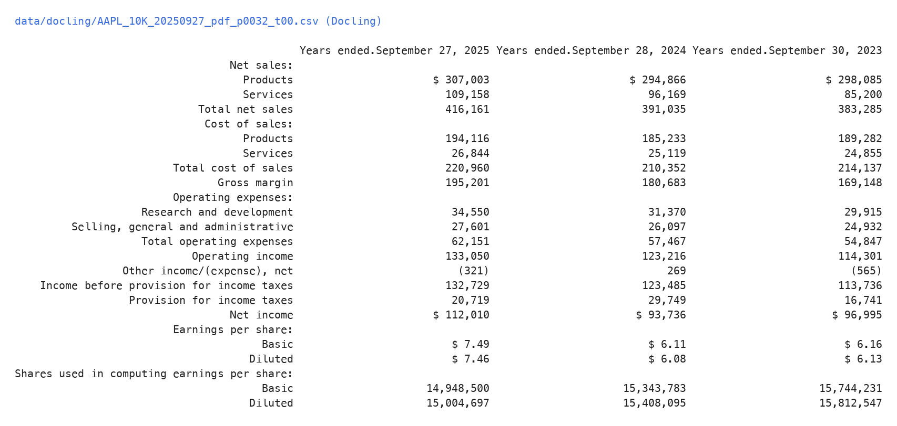
The export stage turns the traditional path's outputs (layout blocks routed through Parts 1 and 2) into one JSONL record per block, then rebuilds each section as Markdown.
src/schema.py defines the Appendix B schema as a pydantic model ("schema": "lantern/1.0"). Every record is validated when it is written, so a bad field fails the stage that produced it.
Field | Example from the FY2025 10-K | Source |
|
| accession number, from |
|
|
|
|
|
|
|
| layout stage |
|
| layout stage |
| Item heading, else nearest Title | export stage |
| block text, or | Parts 1 and 2 |
|
| the stage that produced the text |
|
| Part 1 |
|
| the rendered PDF |
Each record also carries three fields beyond Appendix B: detector and detector_score (the layout model and its confidence for the block) and figure_path (the crop in data/figures/ for Figure blocks).
dvc repro export
One record, pretty-printed:
head -n 1 data/export/AAPL_10K_20250927.jsonl | python -m json.tool
The first record on page 1 is a cover-page block that the layout model (tf_efficientdet_d0) labelled Table with a score of 0.254. It carries no table object, and its text came from pdfplumber. This is the PubLayNet domain shift the tutorial warns about: the model was trained on journal articles, not SEC cover pages.
Keys are identical across all records in both filings. This prints a set with exactly one tuple of keys:
python -c "import json,glob; print({tuple(sorted(json.loads(l))) for f in glob.glob('data/export/*.jsonl') for l in open(f)})"
{('bbox', 'block_id', 'block_type', 'cik', 'company', 'detector', 'detector_score', 'doc_id', 'extractor', 'extractor_version', 'figure_path', 'fiscal_period', 'fiscal_year', 'form', 'ocr', 'ocr_conf', 'origin', 'page', 'schema', 'section', 'sha256', 'source_path', 'table', 'text', 'ticker', 'units')}
Provenance in the Markdown. Every block is preceded by an HTML comment with the accession number, page and block id. A reader never sees it, but a chunker in Case Study 2 can keep it as metadata. Use single quotes here: in zsh, ! inside double quotes triggers history expansion.
grep -n -A1 '<!--' data/export/AAPL_10K_20250927.md | head
3:<!-- 0000320193-25-000079 p1 p0001_b001 -->
12:<!-- 0000320193-25-000079 p1 p0001_b002 -->
66:<!-- 0000320193-25-000079 p1 p0001_b003 -->
72:<!-- 0000320193-25-000079 p1 p0001_b004 -->
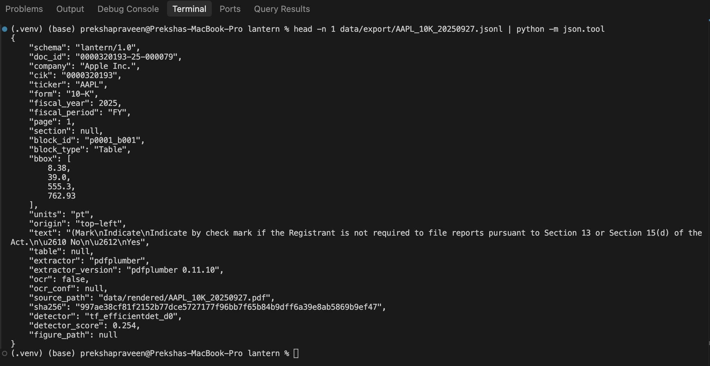
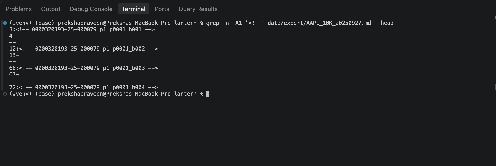
Net income for FY2025 appears in the Markdown as a table row (values in millions, FY2025, FY2024, FY2023):
grep -n -i 'net income' data/export/AAPL_10K_20250927.md | head -5
2591:| Net income | 112,010 | 93,736 | 96,995 |
The nearest provenance comment above that line names the block it came from:
awk 'NR<=2591 && /<!--/{c=$0} NR==2591{print c; exit}' data/export/AAPL_10K_20250927.md
<!-- 0000320193-25-000079 p32 p0032_b003 -->
The matching JSONL record (selected fields):
python -c "import json; [print(json.dumps({k:r[k] for k in ('page','block_id','block_type','bbox','section','extractor')})) for r in map(json.loads, open('data/export/AAPL_10K_20250927.jsonl')) if r['block_id']=='p0032_b003']"
{"page": 32, "block_id": "p0032_b003", "block_type": "Table", "bbox": [3.39, 95.22, 604.84, 548.43], "section": "Item 8", "extractor": "camelot-stream"}
So the number traces back to a Table block on page 32 of the rendered PDF, in Item 8 (Financial Statements), extracted with Camelot stream. The bbox covers the whole statement table, not the single row: provenance is stored per block.
To draw that box on the page:
python -c "import pdfplumber; pdf=pdfplumber.open('data/rendered/AAPL_10K_20250927.pdf'); pdf.pages[31].to_image(resolution=110).draw_rect((3.39, 95.22, 604.84, 548.43), stroke='red', stroke_width=3).save('docs/img/p5-bbox-highlight.png')"
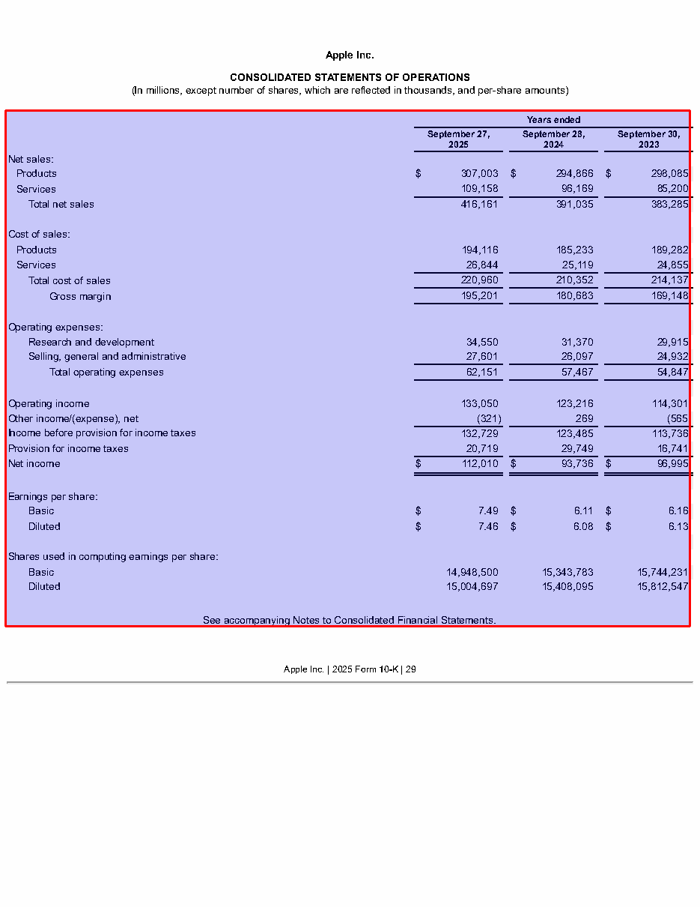
The export stage writes every filing in three formats from the same validated records, so they never disagree about content. They differ only in what they keep.
Role | Format | File |
Source of truth | JSONL |
|
Feeds Case Study 2 (retrieval and question answering) | Markdown, generated from the JSONL records and never edited by hand |
|
Baseline only | TXT |
|
python -m src.format_stats
cat reports/format_stats.csv
This writes reports/format_stats.csv and cuts a 4-page test slice (FY2025 PDF pages 31 to 34: the Item 8 heading, statement index, income statement, comprehensive income and balance sheet) into reports/format_test/. Tokens are approximated as characters / 4.
Scope | Format | Bytes | Approx. tokens | vs TXT |
FY2025 full filing | JSONL | 795,499 | 198,384 | 3.9× |
Markdown | 249,975 | 62,062 | 1.2× | |
TXT | 207,509 | 51,446 | 1.0× | |
FY2024 full filing | JSONL | 811,191 | 202,352 | 4.0× |
Markdown | 248,304 | 61,669 | 1.2× | |
TXT | 204,869 | 50,810 | 1.0× | |
FY2025 pages 31–34 | JSONL | 30,565 | 7,635 | 6.4× |
Markdown | 6,449 | 1,610 | 1.4× | |
TXT | 4,771 | 1,190 | 1.0× |
JSONL costs about 4× the tokens of plain text for a whole filing, and 6.4× on statement pages, where every table is stored twice (raw and normalized) with its metadata fields. Markdown costs 20 to 40% more than plain text while keeping the Item headings, the tables and a provenance comment before every block.
The same slice was given to the same model in a new chat per format, with a prompt that said to use only the document. Scoring rules were fixed before any answer was seen. Answers are recorded word for word in reports/format_test/llm_answers.md.
Question | Tests | Correct answer |
Q1. Net income in the latest fiscal year, and on which page? | provenance | $112,010 million; PDF page 32 (printed page 29) |
Q2. "Other income/(expense), net" in fiscal 2023: income or expense? | sign, table structure | $(565) million, an expense |
Q3. Which Item has the balance sheets; total assets at the end of fiscal 2025? | section, number | Item 8; $359,241 million |
Format | Scored run | Where the Q1 page came from |
JSONL | 3 / 3 | the |
Markdown | 3 / 3 | the provenance comment |
TXT | 2 / 3 + 1 partial | matching detached page numbers to statement titles by order; the answer changed between runs |
All three formats got every number and sign right. The difference is how well each answer is grounded: JSONL and Markdown gave the page from explicit markers, while TXT had to guess.
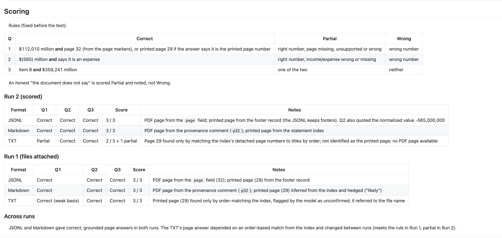
JSONL is the source of truth. It is the only format that keeps every field (page, bbox, block id, extractor version, raw and normalized cells, sha256), and Part 11 and any Case Study 2 citation need those fields. At about 200,000 tokens per filing, it is too expensive as LLM context.
Markdown feeds Case Study 2. It answered as accurately as JSONL at about a fifth of the tokens on the slice, its ## Item headings let text be split by section, and every block keeps its comment, which leads back to the JSONL record and its bbox.
TXT is kept only as a baseline, to show what the structure in the other two formats is worth.
The same pages were sent through AWS Textract (AnalyzeDocument with TABLES and LAYOUT, region us-east-1): 7 of the 10 allowed pages. These were the FY2025 income statement (p32), the balance sheet (p34), the two tables that scored below tables.accept_score (p22, p47), and the three pages of the scanned fixture. Textract's output was mapped into the Part 5 schema and compared cell by cell with the open-source output.
managed:
enabled: false
provider: aws-textract
region: us-east-1
Piece | What it does |
| Called from |
| Maps Textract responses into schema records (bbox from page fractions to PDF points, top-left; tables through the Part 2 normalizer) |
| The 7 raw responses, one JSON file each, keyed by a hash of (source PDF hash, page, provider, API, features) |
| Tracks the cache with |
Every fallback decision is logged in data/export/managed_fallback_log.csv and data/parsed/managed_fallback_log.csv. Because the default is enabled: false, dvc repro runs without AWS credentials.
dvc pull data/managed.dvc
ls data/managed
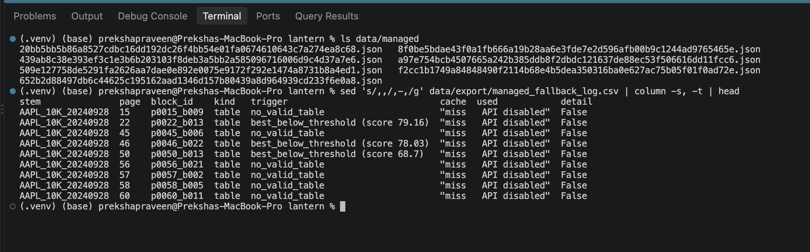
No API calls are needed; both commands work from the cache:
python -m src.managed.mapper
python -m src.managed.compare
ls reports/managed/
Statement tables, cell by cell:
Page | Open-source numeric cells | Textract numeric cells | Identical |
FY2025 p32, income statement | 57 | 57 | 57 |
FY2025 p34, balance sheet | 54 | 54 | 54 |
OCR on the scanned fixture (WER against the born-digital text of the same pages, after treating curly/straight quotes, dashes and ®/™/© as equal):
Scanned page | Tesseract WER | Textract WER | Numbers correct | Confidence (Tesseract / Textract) |
1 | 0.000 | 0.004 | both 100% | 95.4 / 99.1 |
2 | 0.000 | 0.002 | both 100% | 95.7 / 99.8 |
3 | 0.002 | 0.004 | both 100% | 95.5 / 99.7 |
Textract reported higher confidence, but Tesseract was at least as accurate, so confidence thresholds have to be calibrated per engine.
The two low-score tables the fallback replaced:
Page | Camelot (best attempt) | Textract | Values correct |
p22, share repurchases |
| complete one-row headers | 11/11 both |
p47, term debt |
| no extra row, headers merged | 21/21 both |
The fallback fixed table structure, not numbers. A low Camelot score did not mean wrong values.
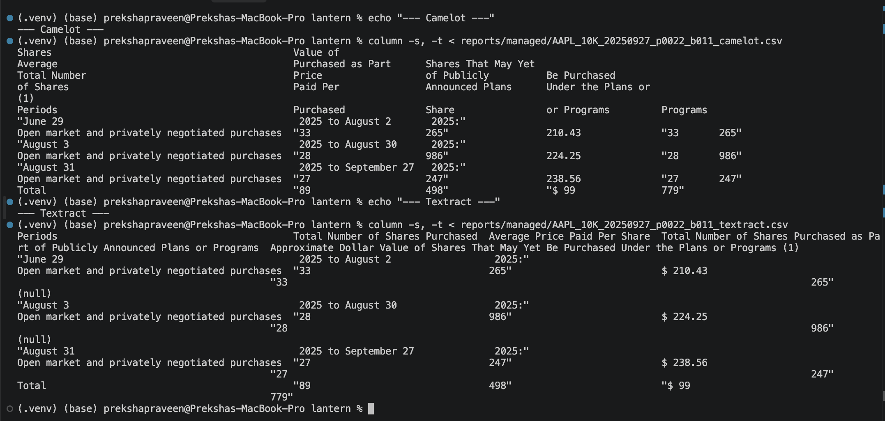
From AWS's Textract pricing page (checked 2026-10-07): Tables at $0.015 per page for the first 1 million pages a month, with Layout free alongside Tables.
Volume | Pages | Textract, Tables + Layout |
Our corpus (2 filings) | 121 | about $1.82 |
5,000 filings a year, every page | about 302,500 a year | about $4,540 a year |
5,000 filings a year, fallback only | at most about 50,000 a year | at most about $750 a year |
Public 10-Ks are low risk, but client documents would need answers first: whether content is used for training (and an AI-services opt-out in AWS Organizations), which region stores it, how long it is kept and how to delete it, which compliance standards the client requires, and a least-privilege IAM role with keys kept out of the repo. Details are in reports/build_vs_buy.md.
Keep the open-source pipeline as the primary path. Textract matched it number for number on every page compared, and its one measurable benefit was cleaner table structure on two tables whose numbers were already right. Keep Textract as the optional, cached fallback, off by default, and trigger it from a validation failure (an XBRL mismatch in Part 11) rather than from Camelot's score alone.
Every step of the pipeline is a DVC stage in dvc.yaml, with its command, dependencies, parameters and outputs. dvc.lock records the hash of every output, so dvc pull gives anyone exactly our files, and dvc repro only re-runs a stage when its code, parameters or inputs change.
The brief's nine canonical stages:
download → render → parse_pdfplumber, tables, layout, parse_docling → export → xbrl → evaluate
Three folders are inputs rather than stage outputs, so they are tracked with dvc add:
Pointer file | What it tracks |
| the cached Textract responses (Part 7) |
| the hand-typed answer key (Part 9) |
| the benchmark measurements (Part 10) |
Every threshold and setting lives in params.yaml, so changing one re-runs only the stages that read it.
dvc stage list
dvc dag
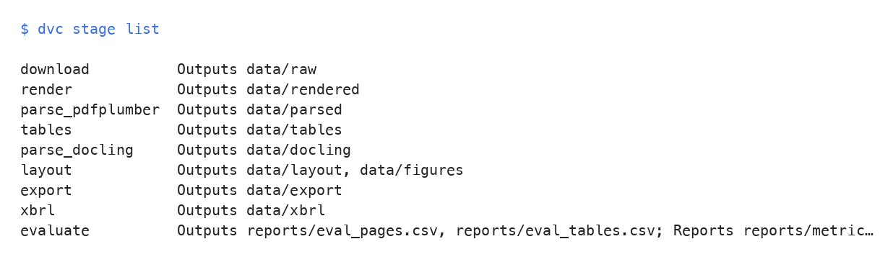
The data lives in an AWS S3 bucket (lantern-dvc-team1-2026, us-east-2), with two remotes in .dvc/config:
Remote | URL | Used for |
|
| reading: anyone can |
|
| pushing: team members only |
The bucket allows public reads of objects but not listing, and only the team's IAM user can write. To push, a team member sets the key locally; it goes into .dvc/config.local, which is never committed:
dvc remote default --local store
dvc remote modify --local store access_key_id <key-id>
dvc remote modify --local store secret_access_key <secret>
dvc push -r store
.github/workflows/smoke.yml runs on every pull request, with no EDGAR access, DVC remote or credentials: it installs the Python and system dependencies, runs the text and table scripts on the committed fixtures in tests/fixtures/, and then runs pytest. This is why every stage script accepts --input and --output arguments.
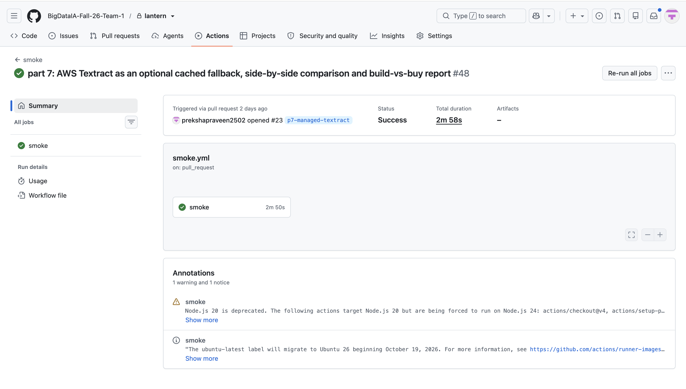
On a fresh clone of main:
dvc pull fetched all 12 data folders with no errors.dvc repro skipped all 9 stages and both pointer files: a second run with no changes skips everything, as the brief requires.dvc metrics show read reports/metrics.json, and pytest -q passed 65 tests.The evaluate stage scores every extraction path against a hand-typed answer key.
data/ground_truth/ (tracked with data/ground_truth.dvc), with fixture copies in tests/fixtures/gt/ for CI. 18 pages: 8 per filing, plus 2 fixtures:
Stratum | FY2025 | FY2024 | |
Statements | p32 income, p34 balance sheet, p36 cash flows | same pages | |
Notes | p40, p45 | p40, p45 | |
Prose | p5, p20 | p5, p20 | |
Cover | p1 | p1 | |
Multi-column |
| ||
Scanned |
| ||
The filings contain no multi-column or scanned page, so those two strata use the Part 0 fixtures, as the brief allows.
How the pages were made: typed from the rendered page image, or "html-assisted" (copied from the original HTML filing, a different source from the PDF text layer the parsers read, then corrected against the page image). The method for every page is in data/ground_truth/pages.csv. No ground truth was made from parser output. The rules are in reports/ground_truth_conventions.md.
Tables: the FY2025 income statement and balance sheet (111 cells) were keyed by two people independently. They agreed on 110 of 111 cells (F1 0.991). The one difference, a digit transposition in the 2024 diluted share count (15,048,095 vs 15,408,095), was resolved against the page image: 15,408,095.
dvc repro evaluate
dvc metrics show
Both sides of every comparison get the same normalization: Unicode NFKC, curly quotes to straight, dashes to "-", "$" separated, whitespace collapsed, lowercase. Punctuation is kept, so a lost sign such as (321) becoming 321 counts as an error. Tables are compared as (row label, year, occurrence) → value, so tables of different shapes are compared fairly.
Source | WER | CER | Numeric recall |
pdfplumber | 1.67% | 1.54% | 99.5% |
Docling | 6.32% | 4.27% | 87.4% |
layout | 12.30% | 10.89% | 99.5% |
WER per stratum:
Stratum (pages) | pdfplumber | Docling | layout |
Statements (6) | 1.67% | 9.87% | 4.74% |
Notes (4) | 2.20% | 2.98% | 6.78% |
Prose (4) | 0.11% | 4.05% | 5.37% |
Cover (2) | 3.74% | 6.90% | 59.87% |
Tables (111 double-keyed cells): F1 1.0 for both the traditional path and Docling.
Fixtures (pdfplumber with the OCR fallback, as run in CI):
Fixture | WER |
Statement (FY2025 p32) | 2.27% |
Multi-column | 7.62% |
Scanned (OCR) | 0.00% |
tests/test_quality.py runs Parts 1 and 2 on the fixtures, grades them with evaluate.py, and compares the results with thresholds in params.yaml (eval.thresholds): the measured baseline plus a margin.
Check | Measured | Fails if |
Statement text WER | 2.27% | above 5% |
Numeric recall | 100% | below 98% |
Table cell F1 | 1.0 | below 0.98 |
Scanned (OCR) WER | 0.0% | above 5% |
pytest -q passes 65 tests, in CI with no network, DVC data or credentials.
A failing run, on purpose. With Part 2's structural guards switched off and lattice tried first (a temporary parameter file, LANTERN_PARAMS=/tmp/params_broken.yaml), the extractor fell back to lattice fragments with no year headers. Table cell F1 fell from 1.0 to 0.0, and the test failed:
FAILED tests/test_quality.py::test_table_cell_f1 - AssertionError: table cell...
E AssertionError: table cell F1 0.0000 is below 0.98
1 failed, 2 passed, 1 skipped in 18.73s
Both text tests still passed, as they should: the break was in table structure only. Full logs: reports/evidence/quality_failing_run.txt and quality_passing_run.txt.
src/plot_drift.py writes reports/plots/drift.png. The signal is layout block length (words per block), both filings, with Part 3's text-snapping distance at 0 pt and at 15 pt:
0 pt | 15 pt | |
Blocks | 1,796 | 1,705 (−5.1%) |
Blocks under 5 words | 35.0% | 31.6% |
Median words per block | 8 | 9 |
Total words kept | 61,375 | 61,423 |
The drop is concentrated in 1- and 2-word blocks: clipped words joining their paragraph instead of standing alone.
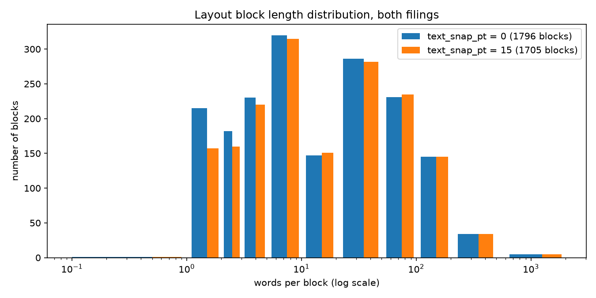
dvc metrics diff compares reports/metrics.json with another branch; its output is in reports/eval.md.
src/bench.py times the pipeline's own functions on all 61 pages of the FY2025 filing (within the brief's 50 to 100), and writes one CSV per stage to data/bench/ (tracked with data/bench.dvc).
Intel Core 7 150U (10 cores, 12 threads), 15.7 GiB RAM, no GPU, Windows, Python 3.11.2 (from data/bench/machine.json). Each stage ran in its own fresh process, on mains power with other heavy applications closed.
python src/bench.py --machine
python src/bench.py --stage parse_pdfplumber
python src/bench.py --stage layout --run 1
python src/bench.py --summarize
Stage | Pages | s/page p50 | s/page p95 | Peak RSS MiB | Failures |
parse_pdfplumber | 61 | 0.096 | 0.233 | 513 | 0 |
ocr_tesseract (forced on every page) | 61 | 1.505 | 2.895 | 85 | 0 |
tables (statement pages) | 5 | 0.210 | 0.798 | 537 | 0 |
layout, full stage | 61 | 0.58 | 3.19 | n/a | 0 |
parse_docling | 61 | 4.517 | 19.215 | 3,597 | 0 |
export | 61 | 0.005 | 0.005 | 105 | 0 |
No real page triggers OCR, so OCR was forced on every page to measure what a scanned filing would cost. Tesseract runs as a separate program, so its own memory is not in Python's RSS.
Cold vs warm. Model loading takes 7.5 s (layout) and 9.2 s (Docling) on a first run, and less than half that on a second run, when the weights are in the operating system's file cache. A long-running worker pays it once.
Assumptions: an m7i-flex.large (2 vCPU, 8 GiB) at $0.09576/hour (AWS on-demand, US East Ohio, checked 2026-10-08), assumed about as fast as the benchmark laptop; 5,000 filings a year × 60.5 pages = 302,500 pages; engineering time not included.
Path | s/page | USD per 1,000 pages | USD per year |
Traditional, p50 | 0.70 | 0.019 | 5.63 |
Traditional, p95 | 3.49 | 0.093 | 28.08 |
Traditional + OCR on every page, p50 | 2.21 | 0.059 | 17.74 |
Docling, p50 | 4.52 | 0.120 | 36.35 |
Docling, p95 | 19.22 | 0.511 | 154.62 |
Textract, Tables + Layout (list price) | n/a | 15.00 | 4,537.50 |
Even the most pessimistic open-source figure is about 29× cheaper than Textract, and the traditional path at the median about 800× cheaper.
layout is the bottleneck: 83% of the median time per page, a little more than half of it Camelot and routing around the model.Full tables, cold-start figures and limitations are in reports/benchmarks.md.
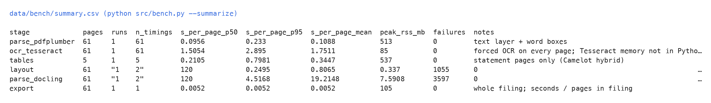
The filing tells us its own numbers in machine-readable form. The xbrl stage uses that as the answer key for every number in the extracted statement tables, for both filings and both table paths.
data/tables/*.norm.csv), already scaled.src/xbrl.py loads each unpacked iXBRL filing with Arelle: 957 numeric facts in aapl-20240928.htm and 962 in aapl-20250927.htm. Arelle reports a period ending September 27 as midnight on September 28, so one day is subtracted from every end date before matching.
Label to concept, in order, with the method recorded for every line:
config/label_map.yaml, 27 entries): dimensional lines (Products and Services are slices of a total), labels printed twice, and the cases diagnosed below.xbrl.fuzzy_cutoff: 0.88).Ambiguity is resolved by period type: a balance sheet line is a balance at a date (an instant concept), and a flow statement line is a change over the year (a duration concept).
Comparison: the tolerance comes from the fact's decimals (-6 gives ±0.5 million). Each line gets a status: match, match_negated (the same amount printed with a negated label, such as an outflow in parentheses that XBRL stores as positive), sign, scale_xN, mismatch, xbrl_missing or unmapped.
dvc repro xbrl
Outputs: data/xbrl/facts.csv, comparison.csv and summary.json, plus notebooks/xbrl_validation.ipynb.
Statement | Traditional | Docling |
Income | 114 / 114 | 114 / 114 |
Comprehensive income | 60 / 60 | 60 / 60 |
Balance sheet | 108 / 108 | 108 / 108 |
Cash flows | 174 / 174 | 168 / 168 |
All | 456 / 456 (100%) | 450 / 450 (100%) |
Of these, 84 per path are match_negated (72 in cash flows, 12 in comprehensive income). No number on either path is a mismatch, a sign error or a scale error.
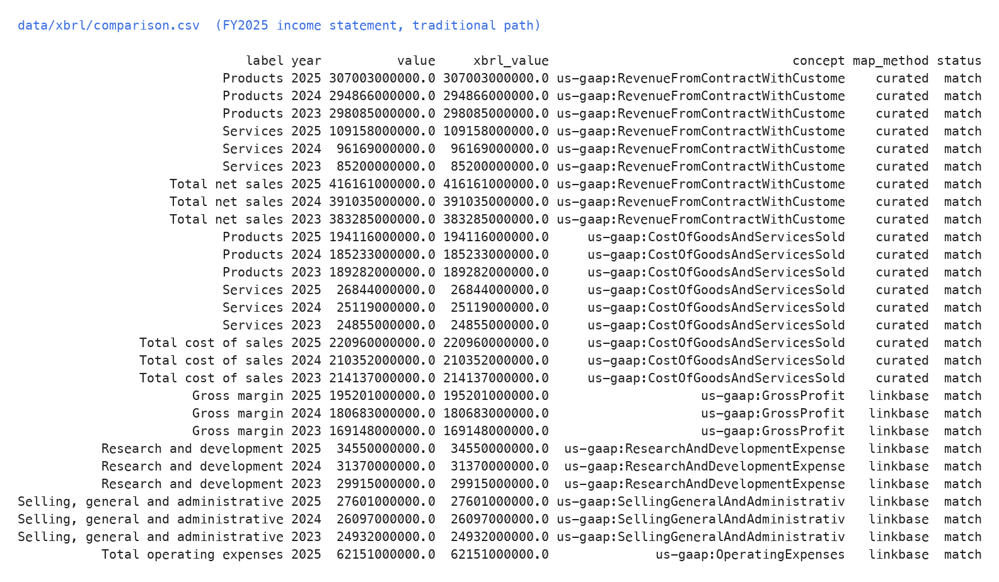
Run 1, automatic mapping only (the linkbase and fuzzy tiers, with a minimal curated map):
Traditional | Docling | |
match | 327 | 327 |
mismatch / scale error | 0 / 0 | 0 / 0 |
sign | 3 | 3 |
xbrl_missing | 12 | 6 |
unmapped | 114 | 114 |
Match rate | 72% | 73% |
Every number that could be mapped was already correct. The gap was entirely mapping and lookup, not extraction. Every non-match was diagnosed:
Cause | Example | Fix |
Same label on a balance concept and a change concept | "Accounts payable": | disambiguate by period type |
Several concepts share a generic label | "Other" (3 lines in cash flows), "Deferred revenue" | curated entries |
Extension concept changed between filings | derivative lines tagged | curated entries list both; the one with a fact is used |
Printed label differs from every filing label | "Total net sales", "Total cost of sales" | curated entries |
Instant concept inside a flow statement | beginning and ending cash looked up as one-year durations | use the concept's period type, and the prior year end for beginning balances |
Our own negation logic | R&D flagged | compare the plain value first; accept the opposite sign only for negated presentations |
Run 2, after these fixes: 100% on both paths.
Both paths extracted every number they found correctly. The difference is coverage: Docling's cash-flow tables lost the first row ("Cash, cash equivalents, and restricted cash and cash equivalents, beginning balances") in both filings, 6 numbers. Its table model merged that row into the column header (Years ended.September 27, 2025 $ 29,943 in one header cell), so the row's numbers never became data cells. The traditional path extracted the row in both filings.
Primary parsing path (Part 4). Keep the traditional pipeline (pdfplumber text, the Camelot hybrid extractor, LayoutParser routing) as the primary path. It has the lowest text error (WER 1.67% vs 6.32% for Docling), the highest numeric recall (99.48% vs 87.43%), and it matched XBRL on all 456 statement numbers. Use Docling as the fallback for side-by-side layouts, footnote separation, and as an independent second reading of the statements.
Formats (Part 6). JSONL is the source of truth: it keeps every field, including the page, bbox and raw and normalized cells, that validation and citation need. Markdown feeds Case Study 2: it answered retrieval questions as accurately as JSONL at about a fifth of the tokens, and every block keeps a provenance comment that leads back to its JSONL record.
Build vs buy (Parts 7 and 10). AWS Textract matched the open-source pipeline number for number on every page compared, and at list price it costs about $4,540 a year for 5,000 filings, against $6 to $155 a year of compute for the open-source paths. Keep it as an off-by-default, cached fallback, triggered by a validation failure rather than sent every page.
Reproducibility (Part 8). A fresh clone rebuilds everything with dvc pull and dvc repro, with no credentials, and every number in this Codelab traces back to a file in reports/ or data/.